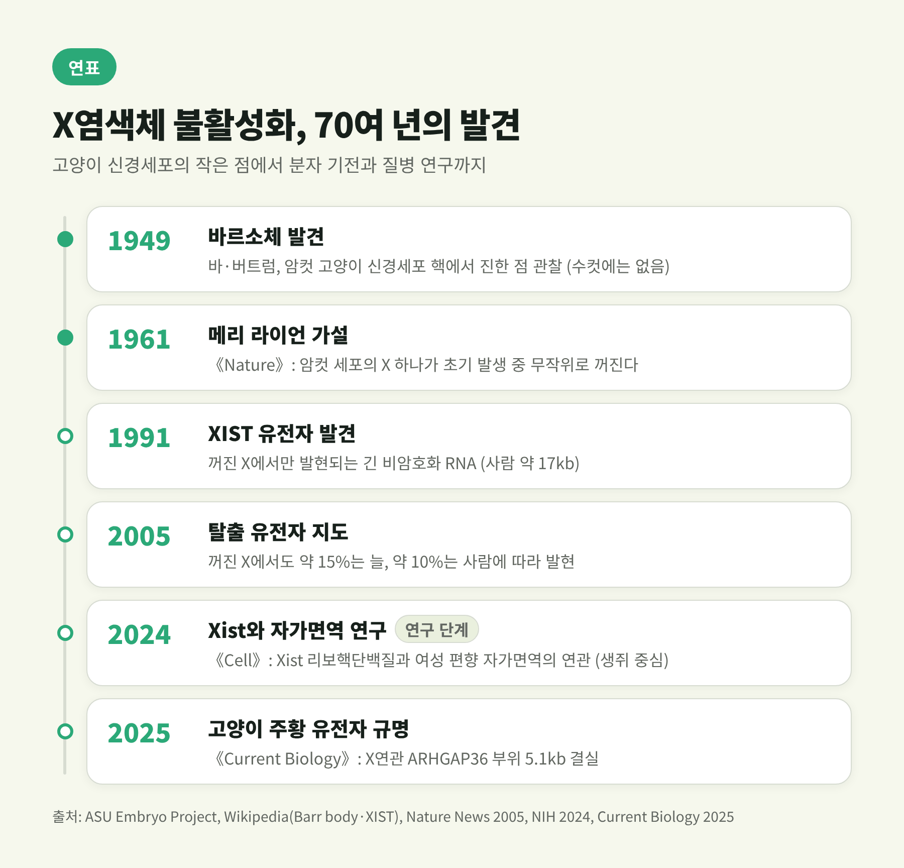
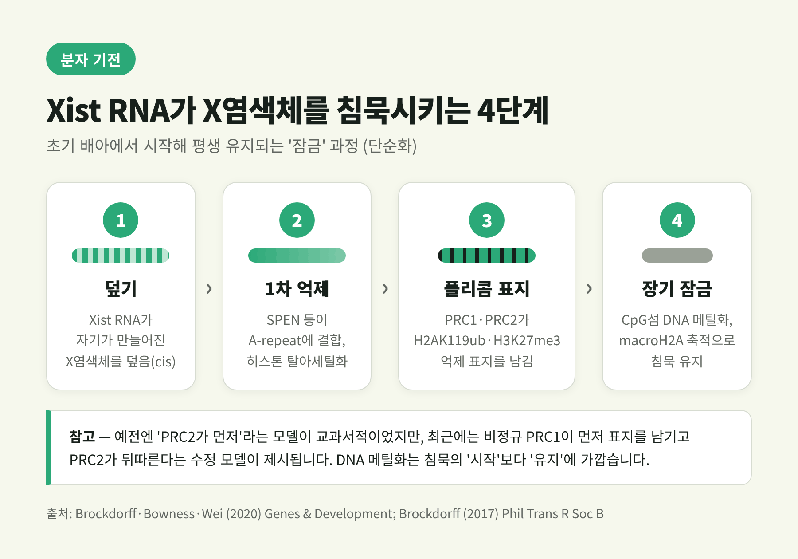
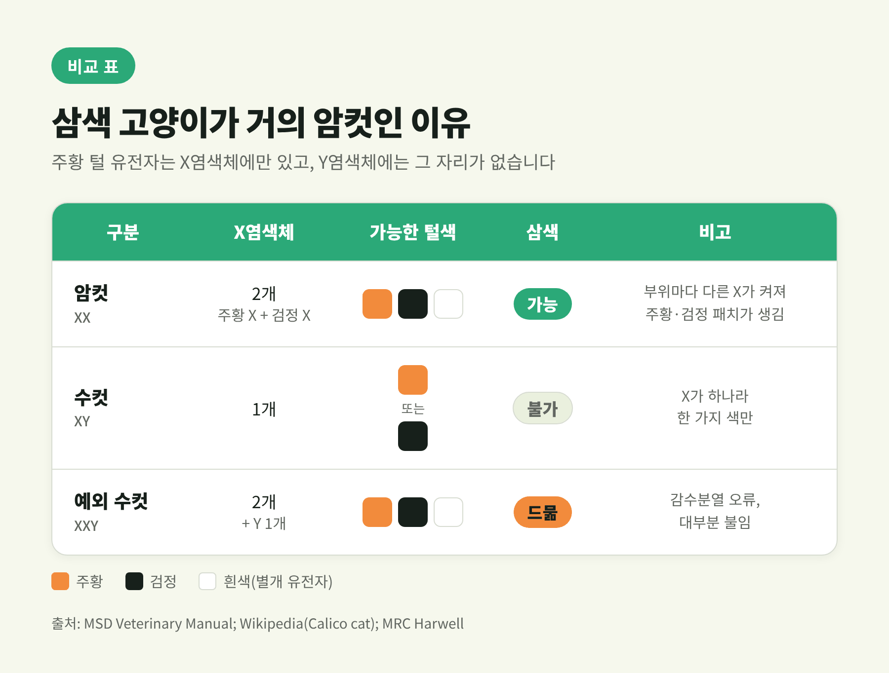
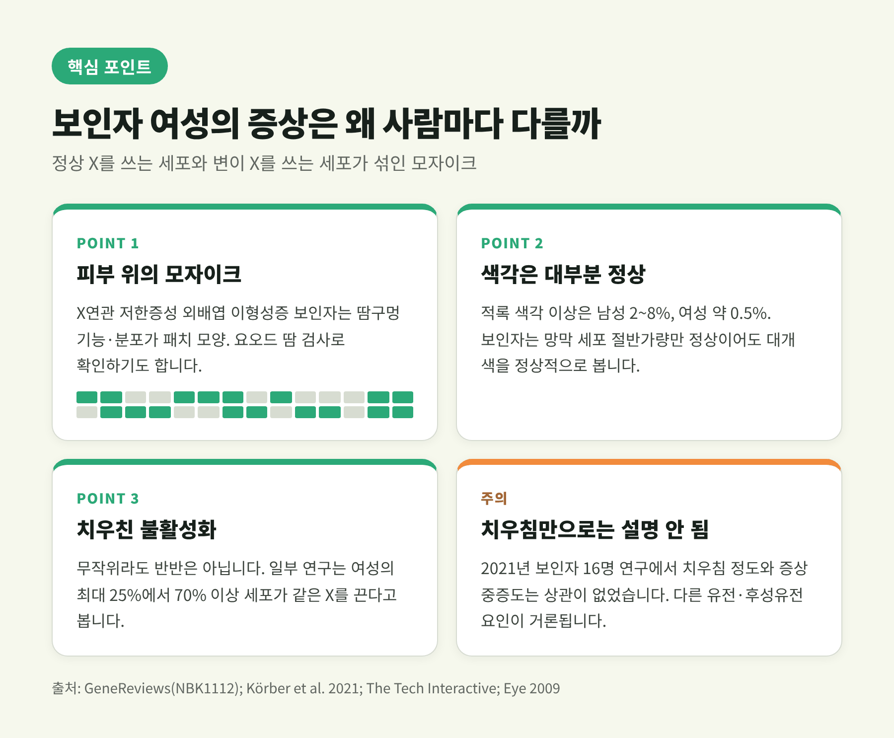
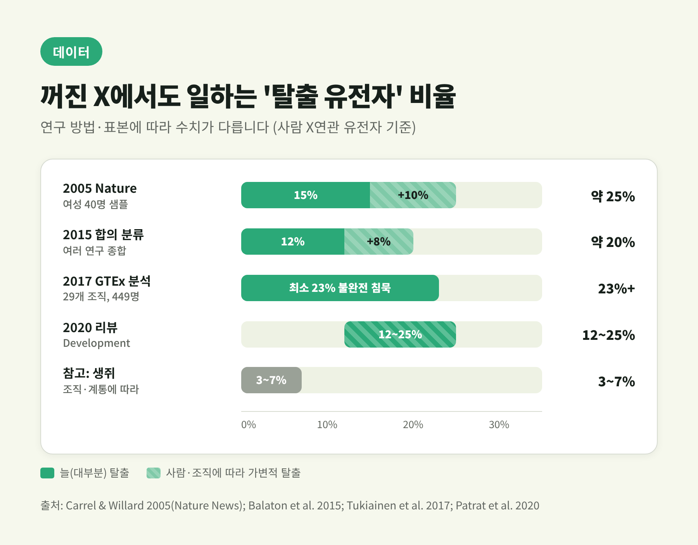

X염색체 불활성화 원리 — 삼색 고양이는 왜 거의 다 암컷일까

이번 글에서는 X염색체 불활성화의 원리를 정리해 보겠습니다. 여성의 세포는 두 개의 X염색체 가운데 하나를 초기 배아 시기에 무작위로 꺼 두고, 그 선택을 평생 딸세포에 물려줍니다. 삼색 고양이의 얼룩무늬, X연관 질환 보인자 여성의 증상 차이, 최근 자가면역 연구까지 모두 이 한 가지 현상에서 출발합니다.
세 줄 요약
- 포유류 암컷 세포는 X염색체 하나를 응축시켜 꺼 둡니다. 남녀 간 X 유전자 용량을 맞추는 '용량 보상'입니다.
- 꺼지는 쪽은 세포마다 무작위로 정해지고, 한 번 정해지면 그대로 복제됩니다. 그래서 몸은 두 종류 세포가 섞인 모자이크가 됩니다.
- 삼색 고양이가 거의 암컷인 이유, 보인자 여성마다 증상 폭이 다른 이유가 여기서 설명됩니다. 다만 꺼진 X에서도 일부 유전자는 켜져 있습니다.
■ 1949년, 암컷 고양이 신경세포에서 본 작은 점
이야기는 1949년 캐나다에서 시작됩니다. 머레이 바(Murray Barr)와 학부생 이워트 버트럼(Ewart Bertram)은 암컷 고양이의 신경세포 핵에서 진하게 염색되는 작은 덩어리를 발견했습니다. 수컷 세포에는 없는 점이었습니다.
이 덩어리는 훗날 '바르소체(Barr body)'라는 이름을 얻습니다. 핵막에 붙어 있는 작은 점처럼 보이는데, 그 정체는 단단하게 뭉쳐 있는 X염색체입니다. 유전학자 오노 스스무가 1950년대 말에서 1960년 무렵 이 사실을 밝혔습니다.
흥미로운 규칙도 있습니다. 바르소체의 개수는 늘 'X염색체 수 빼기 하나'입니다. 46,XX 여성은 1개, 46,XY 남성은 0개, 47,XXY인 사람은 1개, 47,XXX인 사람은 2개를 가집니다. 세포가 "활성 X는 하나만 남긴다"는 원칙을 지키는 셈입니다.
■ 메리 라이언의 1961년 가설
점 하나의 의미를 해석한 사람은 영국 MRC 하웰 연구소의 유전학자 메리 라이언(Mary Lyon)입니다. 그는 1961년 《네이처》에 짧은 논문을 발표했습니다. 핵심은 이렇습니다.
포유류 암컷 세포의 두 X염색체 가운데 하나는 초기 발생 중에 불활성화된다. 어느 쪽이 꺼질지는 세포마다 다르다.
근거는 생쥐였습니다. X염색체가 하나뿐인 XO 암컷 생쥐가 정상적으로 발생한다는 점은 '활성 X 하나면 충분하다'는 뜻으로 읽혔습니다. X연관 털색 돌연변이를 가진 암컷 생쥐의 털이 얼룩덜룩하다는 점도 단서였습니다. 라이언은 거북등무늬 고양이의 검정·노랑 모자이크도 같은 원리로 설명했습니다.
그래서 이 현상은 그의 이름을 따 '라이오니제이션(Lyonization)'이라고도 불립니다. 물론 처음부터 모두가 받아들인 것은 아닙니다. 1966년에는 생쥐 치아 패턴을 근거로 한 비판도 나왔습니다. 지금은 이 논문을 인용한 연구가 4,900건이 넘습니다.

■ 왜 하나를 꺼야 할까 — 용량 보상
X염색체에는 1,000개가 넘는 중요한 유전자가 있습니다. 반면 Y염색체에 있는 유전자는 그에 비해 매우 적습니다.
아무 조치가 없다면 XX인 암컷은 X 유전자 산물을 XY 수컷의 두 배로 만들게 됩니다. MRC 하웰은 이를 '잠재적으로 해로운 이중 용량'이라고 표현합니다. 그래서 암컷 세포는 X 하나를 꺼서 용량을 수컷과 맞춥니다. 이를 '용량 보상(dosage compensation)'이라고 합니다.
생물마다 해법은 다릅니다만, 포유류가 택한 방식은 '둘 중 하나를 통째로 잠그는 것'입니다.
■ Xist RNA가 염색체를 덮는 과정
라이언의 가설이 나온 뒤 약 30년 동안 '어떻게'는 수수께끼였습니다. 실마리는 1991년에 나왔습니다. 꺼진 X염색체에서만 발현되는 유전자, XIST가 발견된 것입니다.
XIST는 X염색체 장완의 'X 불활성화 중심(XIC)'에 있습니다. 여기서 만들어지는 RNA는 단백질로 번역되지 않는 긴 비암호화 RNA입니다. 길이는 사람에서 약 17kb, 생쥐에서 약 15kb에 이릅니다.
이 RNA의 특징은 자기가 만들어진 염색체에만 작용한다는 점입니다. 핵 밖으로 나가지 않고, 전사된 X염색체 위에 차곡차곡 쌓이며 염색체를 뒤덮습니다. Xist가 없는 X는 불활성화되지 않습니다.
침묵은 여러 단계로 진행됩니다. 2020년 《Genes & Development》 리뷰를 바탕으로 단순화하면 다음과 같습니다.
- 덮기 — Xist RNA가 꺼질 X염색체를 cis로 덮습니다.
- 1차 억제 — SPEN 같은 단백질이 Xist의 특정 부위(A-repeat)에 붙어 히스톤 탈아세틸화 효소를 불러옵니다. 유전자 스위치가 먼저 내려갑니다.
- 폴리콤 표지 — 폴리콤 복합체 PRC1과 PRC2가 모여 H2AK119ub, H3K27me3 같은 억제 표지를 염색체 곳곳에 남깁니다.
- 잠금 — 시간이 지나 유전자 앞부분(CpG섬)에 DNA 메틸화가 더해집니다. macroH2A 같은 변형 히스톤도 쌓여 침묵을 오래 유지합니다.
한 가지 짚어둘 점이 있습니다. 예전에는 'Xist가 PRC2를 직접 불러 H3K27me3를 남긴다'는 모델이 교과서적이었습니다. 지금은 비정규 PRC1이 먼저 표지를 남기고 PRC2가 뒤따른다는 수정 모델이 제시되어 있습니다. DNA 메틸화 역시 침묵을 '시작'하기보다는 이미 정해진 침묵을 '유지'하는 쪽으로 이해됩니다. 세부 순서는 지금도 연구가 이어지는 영역입니다.

■ 언제, 어떻게 고르나 — 초기 배아의 무작위 선택
선택의 시점은 발생 초기입니다. 라이언은 1961년에 고양이·원숭이·사람 배아의 성염색질이 수정 후 약 5~6일의 후기 배반포에서 나타난다는 점을 근거로 들었습니다.
생쥐에서는 과정이 비교적 자세히 밝혀져 있습니다. 2~4세포기에 먼저 아버지에게서 온 X가 꺼지고, 이 패턴은 태반 쪽 세포에서 유지됩니다. 배아 본체에서는 이 X가 다시 켜졌다가, 수정 후 약 5.5일께 부계·모계 중 하나를 무작위로 다시 고릅니다.
사람은 조금 다릅니다. 여성 배아에서는 4세포기 무렵부터 두 X 모두에서 XIST가 발현되지만, 이 단계에서는 아직 실제 침묵으로 이어지지 않습니다. 무작위 불활성화가 정확히 언제 완성되는지는 아직 확정되지 않았습니다. 2020년 리뷰는 착상 초기부터 임신 첫 달 말 사이, 세포 계통에 따라 점진적으로 일어날 것으로 봅니다.
중요한 것은 그다음입니다. 한 번 꺼진 X는 세포가 분열해도 그대로 꺼진 상태로 복제됩니다. 그래서 같은 조상 세포에서 나온 세포들은 같은 X를 쓰는 한 덩어리, 즉 '패치'를 이룹니다. 여성의 몸은 아버지 X를 쓰는 세포 무리와 어머니 X를 쓰는 세포 무리가 섞인 모자이크입니다.
무작위라고 해서 반드시 반반은 아닙니다. 우연히 한쪽 X가 훨씬 많이 꺼지는 '치우친(skewed) 불활성화'도 있습니다. 일부 연구는 여성의 최대 25%에서 70% 이상의 세포가 같은 X를 끄고 있다고 봅니다.
■ 삼색 고양이가 거의 다 암컷인 이유
이제 제목의 질문에 답할 차례입니다.
고양이의 주황 털 유전자는 X염색체에만 있습니다. Y염색체에는 해당 자리가 없습니다. 한쪽 X에 '주황', 다른 쪽 X에 '검정' 대립유전자를 가진 암컷을 생각해 보겠습니다. 피부의 어느 패치에서는 주황 X가, 다른 패치에서는 검정 X가 켜져 있습니다. 그 결과가 주황과 검정이 섞인 거북등무늬입니다. 여기에 흰 털을 만드는 별개 유전자가 더해지면 삼색(칼리코)이 됩니다.
반대로 XY 수컷은 X가 하나뿐이라 주황이든 검정이든 한 가지만 가질 수 있습니다. 그래서 삼색 고양이는 거의 모두 암컷입니다.

예외는 있습니다. 감수분열 오류로 X를 하나 더 받은 XXY 수컷입니다. 사람의 클라인펠터 증후군에 해당하는 염색체 구성입니다. 이런 수컷은 매우 드물고 대부분 번식 능력이 없습니다. 서로 다른 두 배아가 합쳐진 XX/XY 키메라 수컷이 보고된 적도 있습니다.
참고로 주황 털의 정체는 오랫동안 미스터리였습니다. 2025년 《Current Biology》에 실린 연구는 X염색체의 ARHGAP36 유전자 안쪽에서 5.1kb가 빠진 결실이 주황색과 밀접하게 연관되어 있다고 보고했습니다. 연구진은 이 유전자가 실제로 X 불활성화를 받는다는 점도 함께 확인했습니다.
■ 보인자 여성의 증상은 왜 사람마다 다를까
같은 원리가 사람의 X연관 질환에서도 나타납니다. 한쪽 X에만 변이가 있는 여성 보인자는 몸 곳곳에 정상 X를 쓰는 세포와 변이 X를 쓰는 세포가 섞여 있습니다.
대표적인 예가 X연관 저한증성(무한증성) 외배엽 이형성증입니다. 다윈은 1875년에 이 질환이 남자 가족에게 반복되며, 딸들은 증상이 없어도 아들에게 물려준다고 기록했습니다. 미국 국립생물공학정보센터(NCBI)의 유전질환 해설서 GeneReviews에 따르면 여성 보인자는 대체로 남성보다 가볍습니다. 머리숱이 적거나, 땀이 패치 모양으로 나거나, 치아 몇 개가 작거나 없는 정도입니다. 땀구멍의 기능과 분포가 모자이크 무늬를 보이기 때문에, 요오드 용액으로 땀이 나는 부위를 확인하는 검사가 쓰입니다. X 불활성화가 피부 위에 지도처럼 드러나는 셈입니다.
다만 증상의 차이를 '어느 X가 얼마나 꺼졌는가'만으로 설명하기는 어렵습니다. 2021년 독일 연구팀은 여성 보인자 16명을 조사했습니다. 땀양은 완전히 땀이 나지 않는 경우부터 정상까지 폭이 넓었지만, X 불활성화 치우침 정도는 증상의 심한 정도와 상관이 없었습니다. 연구진은 다른 유전·후성유전 요인이 함께 작용할 것으로 보았습니다.
색각도 좋은 예입니다. 적록 색각 이상은 X연관 열성 형질로, 남성의 2~8%, 여성의 약 0.5%에서 나타납니다. 보인자 여성은 대개 색을 정상적으로 봅니다. 망막 세포의 절반가량만 정상 유전자를 써도 충분하기 때문입니다. 반면 일란성 쌍둥이 자매 중 한 명만 색각 이상이었던 사례에서는, 그 한 명의 세포에서 정상 X가 주로 꺼져 있었습니다. 유전자가 같아도 '어느 X를 껐는가'가 다르면 결과가 달라질 수 있다는 뜻입니다.

■ 흔한 오해 — 꺼진 X는 완전히 꺼져 있다?
"꺼진 X는 완전히 잠들어 있다." 가장 흔한 오해입니다.
실제로는 꺼진 X에서도 일부 유전자가 켜져 있습니다. 이를 '탈출 유전자'라고 부릅니다. 비율은 연구 방법에 따라 조금씩 다릅니다.
- 2005년 《네이처》 연구(여성 40명 샘플): 약 15%는 늘 탈출, 약 10%는 사람에 따라 탈출
- 2015년 여러 연구를 종합한 합의 분류: 약 12% 탈출, 약 8% 가변적 탈출
- 2017년 29개 조직 분석: 최소 23%가 불완전하게 침묵
- 2020년 리뷰: 사람 X연관 유전자의 12~25%가 탈출
정리하면 '대략 열에 한두 개 이상은 꺼진 X에서도 어느 정도 일한다'고 보는 편이 정확합니다. 생쥐에서는 이 비율이 3~7% 정도로 훨씬 낮습니다. 2005년 연구의 저자 헌트 윌러드는 "모든 여성은 서로 다른 X연관 유전자 조합을 서로 다른 수준으로 발현한다"고 말했습니다.

■ 자가면역 성차와의 연결 — 아직은 연구 단계
자가면역 질환은 여성에게 훨씬 흔합니다. 미국 자료로는 환자 다섯 명 중 최대 네 명이 여성이고, 루푸스는 여성 대 남성이 약 9 대 1입니다. 이 차이를 X 불활성화와 연결하려는 연구가 최근 주목받고 있습니다.
2024년 2월 《셀(Cell)》에 실린 스탠퍼드 연구가 대표적입니다. Xist RNA는 약 100개에 이르는 단백질과 결합해 복합체(리보핵단백질)를 이룹니다. 연구진은 X를 침묵시키지 못하도록 변형한 Xist를 수컷 생쥐에게 발현시켰습니다. 자가면역에 취약한 계통에서 자극물질로 루푸스 유사 질환을 유도하자, 이 수컷들은 암컷에 가까운 비율로 자가면역이 생겼습니다. 환자 약 100명의 혈액에서는 Xist 관련 단백질들에 대한 자가항체도 확인되었습니다.
그러나 연구진 스스로 한계를 분명히 했습니다. 저항성 계통의 생쥐에서는 Xist만으로 병이 생기지 않았습니다. 조직 손상 같은 자극과 유전적 배경이 함께 필요했습니다. 대부분 생쥐 실험이고, 사람 표본은 작습니다.
또 다른 갈래는 탈출 유전자입니다. 2018년 프랑스 연구팀은 면역 유전자 TLR7이 일부 면역세포에서 꺼진 X를 탈출해 양쪽 모두 발현된다고 보고했습니다. 과도한 TLR7은 동물 실험에서 루푸스 유사 질환과 연관되어 있습니다. 하지만 왜 탈출하는지는 밝혀지지 않았고, 루푸스에는 수십 개 유전자가 관여합니다.
예전에는 성차를 주로 호르몬으로 설명했습니다. 지금은 X염색체 자체도 후보로 함께 검토됩니다. 다만 이 결과들을 진단이나 치료로 곧바로 연결하기는 이릅니다. 자가면역 증상이 걱정된다면 개별 판단은 의료진과 상의하시길 권합니다.
■ 정리 — X염색체 불활성화가 남긴 것
결국 남는 것은 하나입니다. 여성의 몸은 한 사람 안에 두 가지 유전 정보가 패치처럼 나뉘어 쓰이는 모자이크라는 사실입니다.
1949년 고양이 신경세포의 작은 점, 1961년 얼룩 생쥐를 본 한 연구자의 가설은 이제 Xist RNA와 폴리콤, DNA 메틸화라는 분자의 언어로 설명됩니다. 그래도 아직 모르는 부분이 많습니다. 사람에서 정확히 언제 선택이 끝나는지, 탈출 유전자가 건강에 어떤 차이를 만드는지는 여전히 연구 중입니다.
"하나를 꺼 두는 것으로 균형을 맞춘다." 삼색 고양이를 다시 보게 된다면, 그 얼룩마다 서로 다른 X염색체가 일하고 있다는 사실을 떠올려 보셔도 좋겠습니다.
참고자료
- ASU Embryo Project — Gene Action in the X-chromosome of the Mouse (1961), by Mary Lyon
- MRC Harwell — X Chromosome Inactivation
- Wikipedia — Barr body
- Wikipedia — XIST
- Brown CJ et al. (1991), Nature — PubMed 1985261
- Brockdorff N, Bowness JS, Wei G. (2020), Genes & Development
- Brockdorff N. (2017), Polycomb complexes in X chromosome inactivation
- Patrat C et al. (2020), X chromosome inactivation in human development, Development
- Nature News (2005), Carrel & Willard
- Balaton BP et al. (2015), Biology of Sex Differences
- Tukiainen T et al. (2017), Landscape of X chromosome inactivation across human tissues
- Wikipedia — Calico cat
- MSD Veterinary Manual — Calico and Tortoiseshell Cats
- McGill Office for Science and Society — Calico cats
- Current Biology (2025), ARHGAP36 deletion and orange coloration
- GeneReviews — Hypohidrotic Ectodermal Dysplasia
- Körber L et al. (2021), Orphanet Journal of Rare Diseases
- EurekAlert/NIDCR (1996), EDA gene
- The Tech Interactive — X-inactivation and color blindness
- Eye (2009), Colour vision deficiency
- NIH Research Matters (2024) — Understanding sex differences in autoimmune disease
- Stanford Medicine (2024) — Women and autoimmunity
- STAT News (2018) — TLR7 and lupus